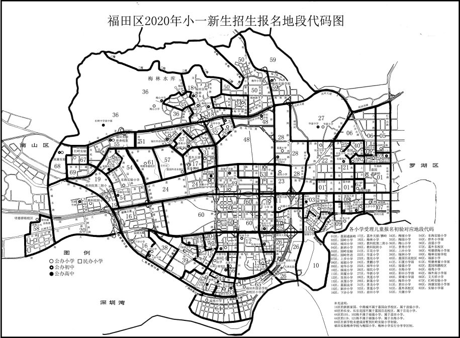

一、招生对象
小学一年级的招生对象为年满六周岁（2014年8月31日及此日前出生）的适龄儿童，在福田区居住且符合以下条件之一者：
（一）深圳市户籍儿童；
（二）享受市政府相关优惠政策人员子女；
（三）父母双方或一方具有深圳户籍的非深户籍儿童；
（四）父母双方或一方持有具有使用功能的深圳经济特区居住证，且在深圳居住满1年、连续参加社会保险（养老保险和医疗保险）满1年的非深户籍儿童。
二、时间安排和报名程序
（一）网上预报名（5月11日-5月19日）
5月11日10:00为网上预报名开始时间，由家长自行登录“福田教育网”(http://www.szftedu.cn)，按指引进入“福田区家长网上预报名系统”（电脑端）进行报名，并将相关证件电子版（拍照或扫描）上传至报名系统。5月19日18:00为网上预报名结束时间。请家长务必在规定时间内进行网上预报名。
温馨提示：1.在该时间段内报名先后不作为学位安排的排序依据，请家长错峰报名，以免造成网络堵塞，影响顺利报名。
2.各公办小学的报名地段范围(简称地段)参见《福田区2020年小一新生报名地段代码图》。
（二）核实实际居住（5月20日-5月25日）
从2020年起，福田区将以社区网格中心登记的人口居住信息作为核实实际居住的依据，为确保实际居住地址与申请学位住房材料相一致，请家长主动到社区网格中心登记人口居住信息，并在网上预报名时填报实际居住承诺书。
温馨提示：在公布录取名单前，学校也将不定期上门核实学位申请人的实际居住情况，一旦发现未实际居住的，将告知有关部门，并取消其学位申请。
（三）志愿填报（5月20日-5月22日）
网上申请学位时可填报三个志愿（个别学区除外）：第一志愿应填报为实际居住地段所属学校，为固定志愿，不可随意选择；网上预报名结束后，系统将显示各学校学位紧张程度，家长可在有空余学位的学校中选择第二和第三志愿。此外，家长须对是否服从调剂作出选择。
温馨提示：选择服从调剂的学生，若未被志愿学校录取，福田区教育局将按照积分从高到低的顺序，统筹安排到相对较近的有空余学位的学校；选择不服从调剂的学生，若未被志愿学校录取，福田区教育局不再统筹安排学位。
（四）初验报名信息（5月23日-5月26日）
网上填报的所有信息，都将分别送相关职能部门进行审核，请家长如实填报，提供虚假材料的，一经查实将取消学位申请资格，并将虚假材料移交相关部门依法处理。
1.5月23日-5月25日期间，学校对家长上传的证件资料进行网上初验。请家长自行登录“网上预报名系统”查看初验结果。
温馨提示：家长自行填报后，由系统自动生成的积分为初始积分，经职能部门审核通过后的积分方为最终学位积分。
2.初验未通过的家长须在5月26日18:00前，重新修改相关信息，并将证件资料电子版（拍照或扫描）上传至报名系统，必要时携带相关证件资料原件到学校现场初验，逾期将不再受理。
（五）材料审核及复核（5月27日-6月17日，6月18日-6月29日）
1.由福田区教育局将初验合格的报名材料分别交街道、社保、住建、计生、公安、房屋租赁、规划和国土及市场监管等部门审核，审核期间，系统将动态显示各项资料审核情况。
2.6月16日系统将显示各项证件审核结果及积分，对结果有异议的家长，务必于6月17日当天18：00前登录“网上预报名系统”进行修改，逾期将无法修改。修改后的信息将再次送有关部门复核，6月29日18:00审核及复核工作全部结束。
温馨提示：审核涉及的业务部门较多，数据量较大，公布审核结果日期若有调整，将于报名系统公告，请家长留意。
对最终积分有异议的家长，须在公布最终审核结果后3个工作日内向福田区教育局政务服务科提出书面申诉，逾期不予受理。
（六）统筹学位（6月30日-7月13日）
福田区教育局与学校整理资料和统筹学位。
（七）公布录取名单（7月14日）
7月14日上午10:00，各小学在公示栏公布加盖学校公章的录取名单，同时家长可自行登录“网上预报名系统”查询最后录取结果。
温馨提示：对录取结果有异议的家长，请于公布名单后3个工作日
内向福田区教育局政务服务科提出书面申诉，逾期不予受理。
（八）新生报到（7月15日-16日）
7月15日-16日,新生到校注册。新生报到时，需提供《儿童入学预防接种证查验证明》，请家长持儿童接种证到就近社康中心开具查验证明，深圳本地接种的儿童也可登录市、区疾控中心网站直接打印。
温馨提示：已公布被某校录取，但未按时到校报到注册的儿童，将取消录取学校学位。
三、报名材料准备
（一）深圳户籍儿童
1.身份证明材料：申请就学儿童及父母的身份证和全家户口簿，必要时需提供亲子关系证明。
2.福田区住址住房证明材料：
（1）由深圳市规划和国土部门出具的住宅用途的深圳房地产权证书或有效购房合同；
（2）现居住地街道办事处房屋租赁管理所登记备案的住宅用途《房屋租赁凭证》或《房屋租赁信息》（必须为整套房屋且有效期为一年以上）；
（3）监护人与住建部门登记备案的政策性住房的《购房合同》或《租赁合同》；
（4）军产房、集资房、单位宿舍或其它住房等有效证明材料。
温馨提示：以单位宿舍申请学位需提供以下材料：①监护人所在工作单位提供拥有该住房的合法使用权证明材料（房产证或租赁凭证，如提供租赁凭证需符合初始发证日期的要求）；②监护人工作关系证明（社保缴纳清单）；③家庭在深圳市无房证明。
分配给单位再转租给员工的公租房、人才房等视为单位宿舍。
（二）非深圳户籍儿童
1.身份证明材料：申请就学儿童的身份证、户口簿，必要时需提供亲子关系证明；
2.父母在深居住的身份证明材料：父母一方为深圳户籍的提供身份证、户口簿；父母均为非深圳户籍的提供深圳市居住证；
3.福田区住址住房证明材料：参照深圳户籍儿童申请入学的住址住房证明材料；
4.监护人在深就业证明材料：父母均为非深圳户籍的，需提供有效的具有“养老保险+医疗保险”功能的深圳市社会保障卡；父母一方为深圳户籍，免提供在深就业证明材料。
（三）港澳台籍儿童
1.身份证明材料：申请就学儿童的身份证、港澳台居民来往内地通行证；
2.父母在深居住的身份证明材料：父母一方为深圳户籍的提供身份证、户口簿；父母均为非深圳户籍的提供深圳市居住证或港澳台居民居住证；
3.福田区住址住房证明材料：参照深圳户籍儿童申请入学的住址住房证明材料；
4.监护人在深就业证明材料：参照非深圳户籍儿童申请入学监护人在深就业证明材料；
5.亲子关系证明材料：港澳籍儿童申请学位，需提供由深圳市公证部门出具的父母双方与子女间的亲子关系公证书。
温馨提示：2020年，学生为非深户籍（港澳籍）租房申请入学的，必须在2019年4月30日（含当日）前办理租赁凭证或租赁信息（以签发日期为准）。
2021年，凡是以租房申请福田区义务教育阶段学校的学生，①租赁有产权证明住房的租户，须办理租赁凭证和网格登记居住信息，受疫情影响，截止日期延至2020年9月30日（含当日）。
②租赁无产权证明住房的租户，无法办理房屋租赁信息的，须在社区网格中心登记人口居住信息，且将以社区网格中心登记的人口居住信息进行学位房锁定。受疫情影响，截止日期延至2020年9月30日（含当日）。
（四）享受相关优惠政策人员的子女
属于相关优惠政策人员的适龄子女，在申请学位时除应按上述要求提供资料外，还应出具优惠政策规定的有关材料（对烈士子女、符合条件的现役军人子女、消防救援队伍人员子女、公安英模和因公牺牲伤残警察子女、华侨以及高层次人才子女、福田英才计划人员子女、福田区参加抗击新冠肺炎疫情的医务人员子女按有关政策予以优待）。
四、积分入学及录取办法
2020年福田区公办学校实行积分入学，积分由基础分和加分两部分构成（具体积分办法附后）。对深圳户籍和符合深圳市就读条件的非深户籍儿童进行积分，按提前志愿（个别学区）、第一、第二、第三志愿顺序以及积分高低依次排序录取，所有志愿学校均未被录取的学生纳入全区统筹调剂。
特别提醒：2020年福田区部分片区学位较为紧张，将出现部分适龄儿童被分流到相对较近有空余学位的学校。
五、公办学位统筹办法
福田区教育局根据当年所有公办学校总的招生计划人数划定全区公办学校录取分数线，低于公办学校录取分数线的学生将调剂到民办学校；
如符合录取条件的申请人数超过某学校招生计划，则按该学校招生计划人数确定该学校的录取分数线；
如符合录取条件的申请人数未达到某学校招生计划，则该学校空余学位纳入全区统筹；
低于志愿学校录取分数线但高于公办学校录取分数线的学生，按照积分高低顺序统筹到距离第一志愿学校相对较近且有空余学位的学校。
六、学位申请房锁定政策
（一）福田区实行义务教育阶段公办学校学位申请房锁定政策，学区内同一套住房只提供一个义务教育阶段公办学校学位（同一父母多个子女不受此限制），在该学位锁定期间，其他家庭不得重复使用该住房申请学位。
（二）从2020年起，录取到福田区小学学校一年级就读的，学位申请房将锁定6年；录取到福田区九年一贯制学校和对口直升学校一年级就读的，学位申请房将锁定9年。
福田区对九年一贯制学校及对口直升学校实行自愿直升政策。对就读于福田区九年一贯制学校及对口直升学校的小学毕业生，既可选择直升初中学校，也可按照学位申请房所属地段申请初中学校的学位。如选择直升初中学校，由就读小学直接将相关资料递交给对应初中，初中学校审核合格后直接录取，同时，其学位申请房小学毕业后继续锁定3年，共锁定9年。如不选择直升的初中学校，学位申请房将于小学毕业当年自动解锁，实际只锁定6年。
（三）学位一旦正式锁定将不再办理学位房转移（转出福田区学校的除外）。
温馨提示：住房锁定情况可通过登录“福田教育网”（http://www.szftedu.cn）左下角处“学区划分”→“学位申请房锁定查询”。
七、试点学区制招生
为进一步提升区域义务教育优质均衡水平，福田区在部分地段试行大学区、共享学区和分享学区招生制度。
（一）大学区招生制度
在益田村片区（即福强小学、全海小学、益田小学3所学校招生区域）试点大学区招生制度：
1.居住在大学区内的学生，可在大学区内的学校中自愿选择1所作为第一志愿学校申请，选择其他有空余学位的学校作为第二、三志愿；
2.按照全区统一的积分标准计算积分，选择报读原地段所属学校的积分增加10分（如属于益田小学招生地段的家庭选择报读益田小学积分将在原积分基础上增加10分，选择报读全海小学或福强小学将无法获得此加分）；
3.按第一、第二、第三志愿以及积分高低依次排序录取，所有志愿学校均未被录取的学生纳入全区统筹调剂（全区统筹调剂时按原积分排名）。
（二）共享学区招生制度
在福田南片区（即福田小学、福南小学、南华实验学校小学部3所学校招生区域）试点共享学区招生制度：
1.居住在共享学区内的学生，可在共享学区内的学校中自愿选择1所作为第一志愿学校申请，选择其他有空余学位的学校作为第二、三志愿；
2.按照全区统一的积分标准计算积分；
3.按第一、第二、第三志愿以及积分高低依次排序录取，所有志愿学校均未被录取的学生纳入全区统筹调剂。
（三）分享学区招生制度
福田区实验教育集团梅香学校小学部与梅园小学、梅林小学试点分享学区招生制度。
1.梅香学校小学部为分享学区学校，与梅园小学、梅林小学分享学区。
2.居住在梅园小学、梅林小学学区内的学生，先选择原学区学校作为第一志愿学校申请，自愿选择梅香学校作为提前志愿学校申请，选择其他有空余学位的学校作为第二、第三志愿。
3.按照全区统一的积分标准计算积分，按提前志愿、第一、第二、第三志愿以及积分高低依次排序录取，所有志愿学校均未被录取的学生纳入全区统筹调剂。
八、注意事项
（一）家长在网上填报的手机号(请勿填写座机号码)是接收学校有关报名通知的主要工具，请务必留意短信（可能被某些软件拦截）内容并积极配合。
（二）深圳市已取消符合计划生育政策作为申请入学的必备条件，仅作为积分入学项目。为避免影响学位积分，请深圳市户籍、非深户籍儿童的家长及时更新完善相关信息。
重要提醒：招生系统将直接与计生管理系统联网比对，根据申请学生父母的计生状况计算计生加分，家长必须于网上预报名前到户籍地或居住地社区工作站登记相关计划生育信息（建议登记前先咨询各街道计生部门或社区工作站），以免影响学位申请积分。
（三）关于特殊儿童的报名：
1.凡属今年小一年级招生对象，能适应普通学校学习生活，且符合在福田区就读条件的适龄特殊儿童，可申报学区地段内学校。
2.经学校审核认为不能适应随班就读的实名登记智障、听障、视障、脑瘫、自闭症适龄儿童，在5-7月的工作日（一年一次）凭户口本、出生证、残疾人证和医院出具的相关证明到深圳元平特殊教育学校（深圳市特殊教育指导中心）接受义务教育能力评估（预约评估电话：89468050）。经鉴定能适应普通学校学习生活的儿童，学校须按要求接收。经鉴定不能适应普通学校学习生活的福田户籍适龄特殊儿童，凭户口本、出生证、医院证明、残疾人证和接种免疫证到特殊学校申请学位。其中，听障、视障类的残疾儿童到深圳元平特殊教育学校咨询、报名，具体报名时间待深圳元平特殊教育学校公告（地址：龙岗区布吉街道西环路138号，电话：89468816），智障等其他类型到福田区竹香学校咨询、报名（地址：福田区农林路61号，联系人：杨老师，电话：82785124）。
（四）凡有以下情况之一者，学校将不提供学位：
1.已安排学位而不按时到校注册；
2.未按实际居住地申请学位;
3.已在各类学校就读小学。
（五）各学校对外工作日时间统一如下：
上午：8:00—12:00；下午：14:00—17:00。
福田区义务教育阶段积分入学办法
|
名称 |
要求 |
基础分 |
加分标准 |
|
第一类型 |
父母在学校报名地段购房*（要求为住宅用途商品房，家庭合法产权在51%以上，下同），儿童入户在该房产。 |
80分 |
1.连续居住加分： ①购房*按房产证发证日期每满1个月加0.1分； ②购买特殊房产按申请人家庭在住房地址实际居住的连续居住证明（如水电费、煤气费等），每满1个月加0.1分； ③租房按租赁凭证在街道租赁所的签发日期，每满1个月加0.1分；（能提供申请人家庭无房证明加2分。无需开具纸质证明，由市房产信息中心核实） 此项累计不超过10分。
2.社保时间加分： 按监护人一方在深累计缴纳社保（养老+医疗）每满1个月加0.1分。 此项累计不超过10分。
3.计生情况加分： 独生子女加1分,其他情况不加分；计生审核以家庭为单位。 |
|
第二类型 |
父母在学校报名地段购房*，但儿童未入户在该房产。 |
75分 |
|
|
第三类型 |
在学校报名地段有以下特殊房产之一，且儿童入户在该房产：①父母购买自建房或集资房或祖屋或军产房或商务公寓等特殊住房，并有合法证明材料；②父母购买住宅用途商品房合法产权在51%以下；③祖父母（外祖父母）在学校报名地段购房且祖孙三代户口均在该房产。 |
70分 |
|
|
第四类型 |
在学校报名地段有以下特殊房产之一，但儿童未入户在该房产： ①父母购买自建房或集资房或祖屋或军产房或商务公寓等特殊住房，并有合法证明材料；②父母购买住宅用途商品房合法产权在51%以下。 |
65分 |
|
|
第五类型 |
儿童为福田户籍，父母在学校报名地段租房或能提供其他有效住房证明。 |
65分 |
|
|
第六类型 |
儿童为非福田户籍，父母在学校报名地段租房或能提供其他有效住房证明。 |
60分 |
备注：①申请儿童和父母不能提供有效的加分证明材料的，视为放弃加分。
②连续居住加分计算的截止时间为2020年4月30日，如时间中断超过1个月，则从离报名日期最近的时间开始计算。
ƒ社保累计加分，计算的截止时间为2020年4月30日，在疫情期间中断的不受影响。
福田区2020年小一新生报名地段代码图
